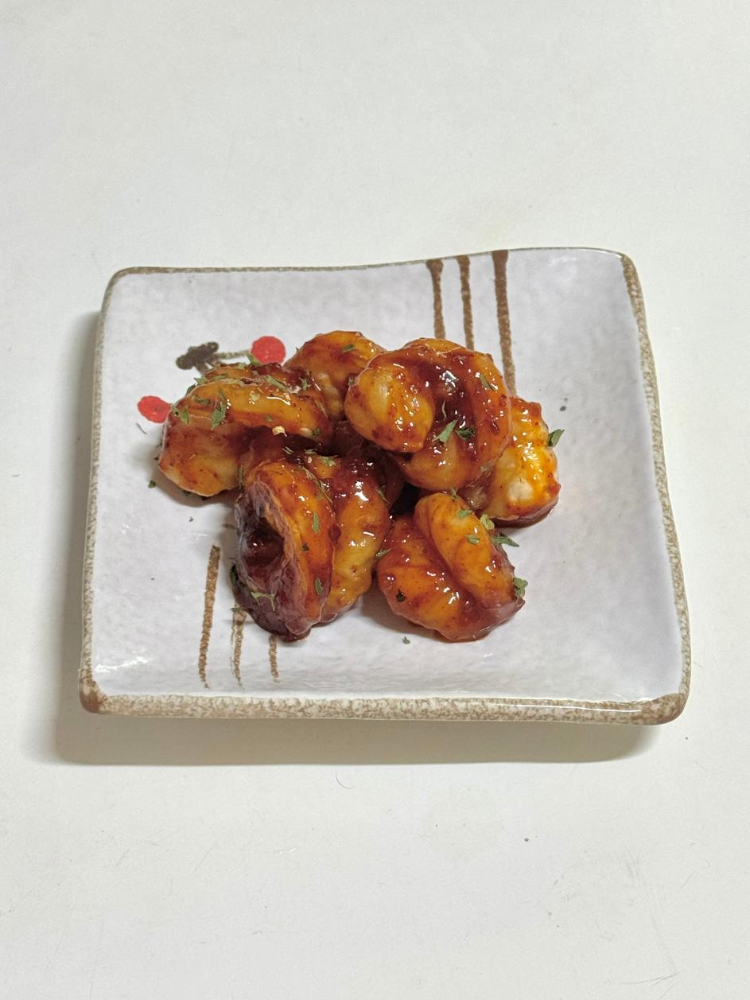

- 칠리새우 -
달콤하면서도 매콤한 맛이 매력적인 칠리새우

📝 재료
- 새우
- 고춧가루 - 한 큰술
- 간장 - 한 큰술
- 맛술 - 한 큰술
- 케쳡 - 한 큰술
- 설탕 - 한 큰술
- 물엿 - 한 큰술
- 후추, 버터, 마늘
🍳 만드는 법
- 새우는 해동 후 물기를 제거하고 후추로 간을 합니다.
- 마늘과 버터를 넣고 새우를 볶아 익혀줍니다.
- 고춧가루, 간장, 맛술, 케첩, 설탕을 넣고 잘 섞어 볶아줍니다.
- 마지막으로 물엿을 넣고 한 번 더 볶으면 완성입니다.
💡 TIP
매콤하게 드시고 싶으시면 페퍼론치노를 넣어주면 됩니다.